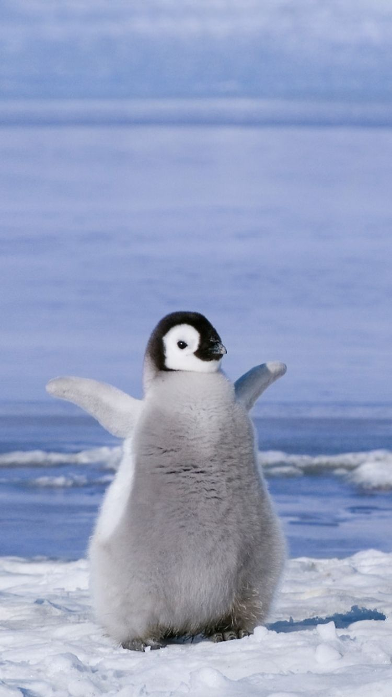

Hilihalihalihó
Adorján Bianka vagyok, másodéves gazdaságinformatikus hallgató. Nagyon szeretem a webfejlesztést! A neptun kódom WNXAO6.
Imádom a pingvineket, nagyon aranyosak és sok videót nézek róluk. Amikor még picik, még bolyhosak, amikor már nagyok viccesek. Kedvenc ételük a halak. Én is szeretem a halat. Talán pingvin lennék? Hát azért remélem nem!
Ez a kedvenc pingvines videómIdei tantárgyaim:
Kedvenc ételeim:
Legjobb profil fotóm:
